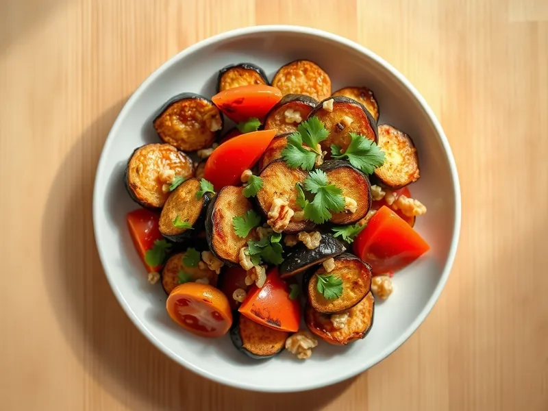

Тёплый салат из жареных баклажанов с помидорами и чесноком
Жареные баклажаны с помидорами, грецкими орехами, чесноком и кинзой по-грузински
25 мин2 порц.439 ккал на порциюБ 8 · Ж 36 · У 21Кавказская кухня
Открыть в приложении: порции, таймеры, список покупок
Продукты на 2 порц.
- Баклажан2 шт
- Помидоры2 шт
- Чеснок2 зуб.
- Грецкие орехи40 г
- Кинза20 г
- Растительное масло3 ст. л.
- Соль0,7 ч. л.
- Острый перец молотый по желанию1 щеп.
Как готовить
- Нарежьте баклажаны кубиками 2 см, посолите, перемешайте и оставьте на 10 минут. Отожмите выделившийся сок руками.
- Обжарьте баклажаны в масле на сильном огне 8-10 минут, помешивая, пока они не станут золотистыми и мягкими внутри.
- Пока жарятся баклажаны, нарежьте помидоры дольками, мелко порубите орехи, кинзу и чеснок.
- Переложите горячие баклажаны в миску, сразу добавьте чеснок, чтобы он раскрыл аромат.
- Добавьте помидоры, орехи, кинзу и хлопья чили, перемешайте и подавайте тёплым.
Совет. Соль вытягивает из баклажанов горечь и воду, поэтому при жарке они впитывают меньше масла. Жарьте в один слой, при необходимости в два приёма.